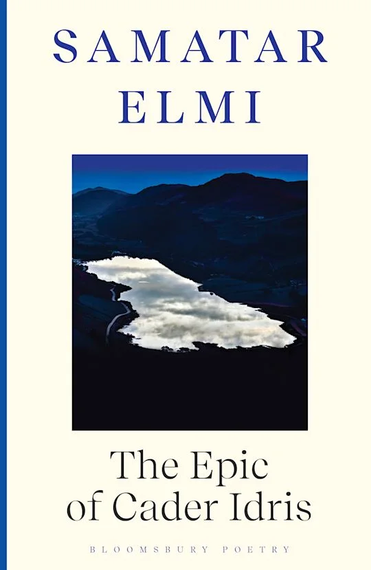
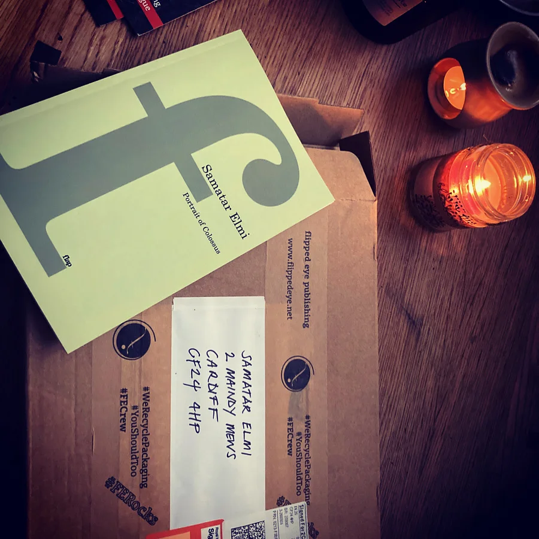

Agen Bien Fou
An elegiac and politically charged collection confronting oppression, imperialism, war, grief, cultural survival and the defiant possibilities of resistance.
Poetry that moves through diaspora, myth, philosophy, ecology, language and the fault lines of the contemporary world.
Three collections accompany the national tour.
An elegiac and politically charged collection confronting oppression, imperialism, war, grief, cultural survival and the defiant possibilities of resistance.
A collection confronting authorship, instruction and ownership, reclaiming language from the forces that seek to automate, narrow or control it.
A collaborative collection by Samatar Elmi and Sam Telford: twenty-six poems shaped by exchange, precarity, friendship and the strange economies surrounding creative work.
The books that established the work.

Elmi’s debut full-length collection brings hip-hop’s music into conversation with British myth, Somali oral history, philosophy and the lived experience of diaspora. The collection includes the poem that won the 2021 Geoffrey Dearmer Prize.

A searingly forthright debut pamphlet exploring migration, multilingualism, race, family, religion and masculinity. Selected as a Poetry Book Society Pamphlet Choice.
Forthcoming poetry and a recent theatre R&D.
A forthcoming collection.
Ekphrastic Meditations on Honoria Brown’s “Nightmares” Series, co-written with Honoria Brown and Will Moorfoot.
A reimagining of Shakespeare’s King Lear, successfully developed through two scratch performances at Chapter Arts Centre, directed by Mathilde Lopez.
Selected journal and anthology appearances, with the original publications shown at a consistent scale.
This is a selected record rather than a complete bibliography.
For a publication-ready bibliography and credentials list, download the press kit.
Open the press kit